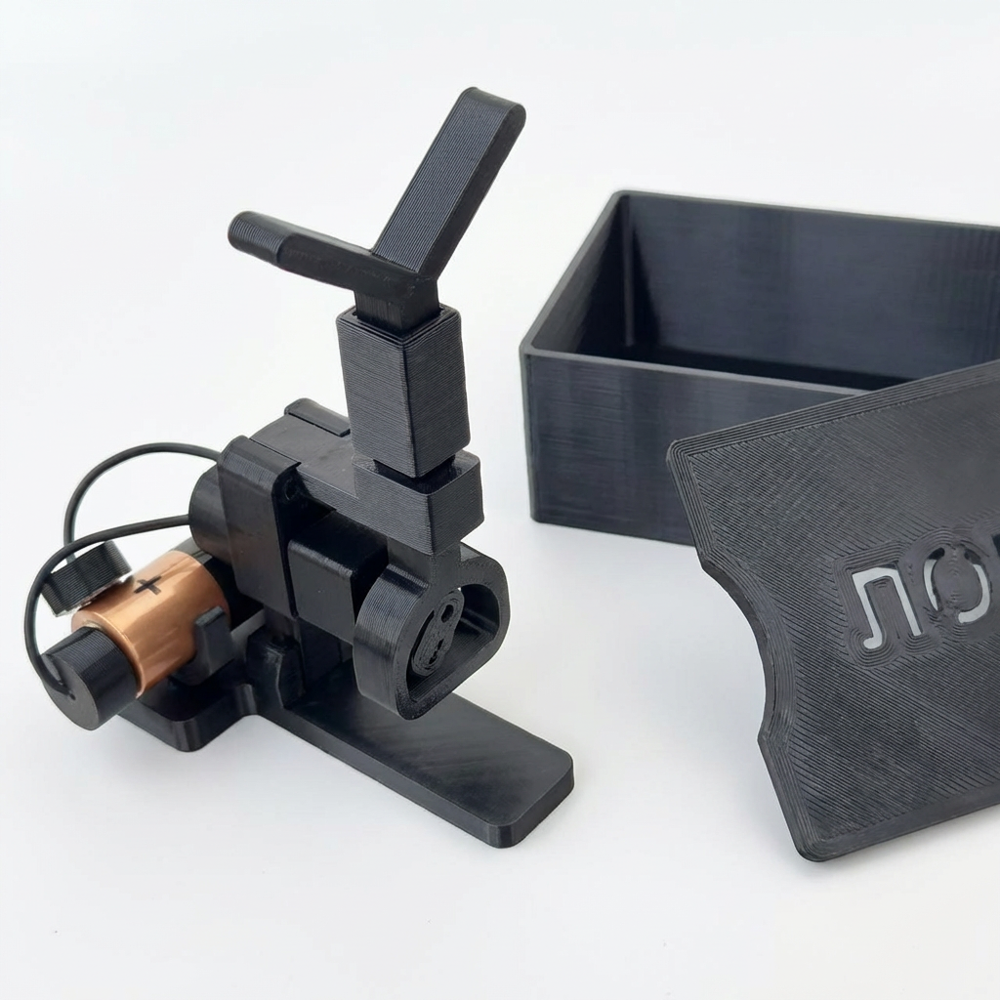
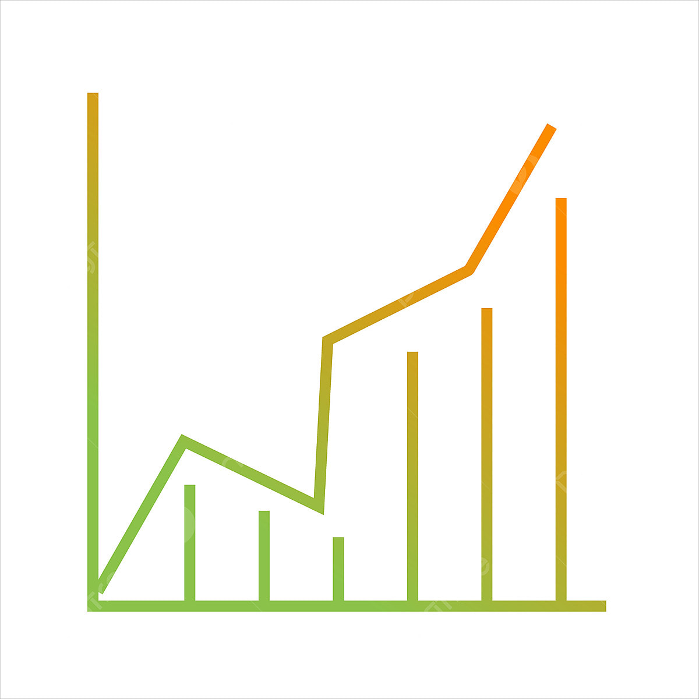

Технология устройтства
Устройство на базе мотор-редуктора создает высокочастотные колебания хлыстика с амплитудой 8–12 мм, имитируя естественные движения мормыша. Интеллектуальная автоматизация позволяет рыбаку сосредоточиться на тактике, а не на монотонной проводке.
Корпус выполнен из ударопрочного PETG-пластика, имеет защиту от влаги по стандарту IP54 и обеспечивает до 60 часов автономной работы.
Ключевые преимущества
-
Интеллектуальная автоматизация
Система сама имитирует игру мормышки, освобождая время для выбора тактики и места лова.
-
Высокая доступность
Стоимость устройства в 3 раза ниже аналогов, что открывает доступ к технологии массовому рынку.
-
Фокус на главном
Больше не нужно отвлекаться на монотонную проводку. Сосредоточьтесь на процессе рыбалки и получайте удовольствие.

Доступно для заказа
Приобретите автоматизированную систему для зимней рыбалки уже сегодня!
Перейти на Ozon